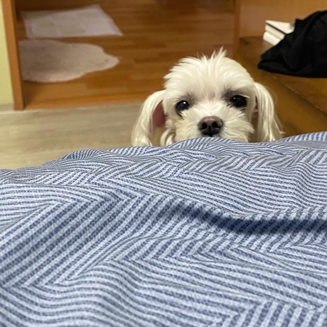

안녕하세요.
인삿말 소개 성격 갤러리
인삿말
안녕하세요. 이번에 저희집 강아지를 소개하려고 합니다.
소개
- 이름: 두부
- 종류: 말티즈
- 출생: 2012년(만 7세)
- 성별: 암컷
- 특징:
- 두부처럼 흐물거리고, 고양이만큼 유연함.
- 딱딱한 것을 싫어해 뼈나 개껌같은 것을 싫어함.
- 말랑하고 부드러운 간식만 선호함.
- 아무리 좋아하는 음식도 배가 부르면 먹지 않음.
- 털깎는 것을 아주 싫어해 최근에는 팔다리털만 남기고 밀었더니 시야에는 털이 보여 스트레스를 거의 받지 않았음.
성격
7년 째 한결같이 가족들이 자다 일어나면 오랜만에 본 것 처럼 반깁니다.
외출할 때마다 가지 말라며 울고, 집에 돌아오면 제일 먼저 달려옵니다.
애교가 많고 질투도 많은 동생같은 존재입니다.
말은 못하지만, 간식이 먹고싶거나, 사료가 맛이없거나, 나가고 싶을 때 등
원하는 건 모두 행동으로 설명합니다.
갤러리
앞서 소개한 강아지 두부입니다.
두부 어릴 때 사진입니다.

같이 자고싶어 침대에 올려달라고 쳐다보는 사진입니다.
산책 다녀온 후 잠이든 사진입니다.

달라는 눈빛을 보내는 사진입니다.
따뜻한 곳 혹은 시원한 곳을 찾아 자리잡은 사진입니다.
방문해주셔서 감사합니다.